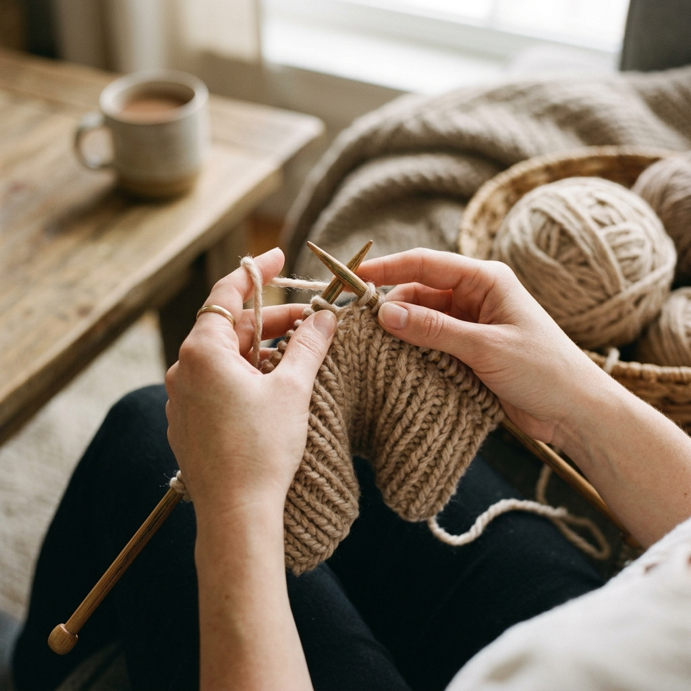

โครเชต์ (Crochet) คือศิลปะการถักผ้าด้วยเข็มตะขอ (Crochet Hook) และไหมพรม ต้นกำเนิดมาจากยุโรปในศตวรรษที่ 19 และแพร่หลายไปทั่วโลก ความแตกต่างจากนิตติ้งคือ โครเชต์ใช้เข็มเดียว และมือหนึ่งมักจะถือเข็ม อีกมือถือชิ้นงาน บทเรียนนี้จะสอนทุกอย่างตั้งแต่การถือเข็มถูกวิธี ไปจนถึงลายพื้นฐานที่ใช้งานได้จริง
สารบัญ
- อุปกรณ์ที่ต้องเตรียม
- วิธีถือเข็มและจับด้ายที่ถูกต้อง
- การทำปมลื่น (Slip Knot)
- การถักห่วงโซ่ (Chain / ch)
- ลาย Single Crochet (sc) — ลายเดี่ยว
- ลาย Half Double Crochet (hdc)
- ลาย Double Crochet (dc) — ลายสองชั้น
- การขึ้นรอบใหม่ (Turning Chain)
- วิธีอ่านแพทเทิร์นโครเชต์
- การวัด Gauge และปรับขนาด
- การปิดงานและซ่อนปลายด้าย
- ชิ้นงานฝึกหัดแรก: ที่รองแก้วสี่เหลี่ยม
🧺 ขั้นที่ 1: อุปกรณ์สำหรับผู้เริ่มต้น
| อุปกรณ์ | แนะนำสำหรับมือใหม่ | ราคาโดยประมาณ |
|---|---|---|
| 🪝 เข็มโครเชต์ | ขนาด 4.0–5.0 มม. (จับสบาย มองเห็นห่วงชัด) แนะนำด้ามจับยาง (Ergonomic Handle) | 30–150 บาท |
| 🧶 ไหมพรม | ไหม 100% Cotton หรือ Acrylic เส้นหนาปานกลาง (DK–Worsted) สีอ่อน มองเห็นห่วงชัด | 50–150 บาท/ม้วน |
| ✂️ กรรไกร | กรรไกรปลายแหลมสำหรับตัดด้าย | 30–80 บาท |
| 🧵 เข็มปลายทื่อ | Tapestry Needle ช่องใหญ่ สำหรับร้อยปิดและซ่อนด้าย | 20–50 บาท |
| 📍 Stitch Marker | ใช้หนีบห่วงแรกของแต่ละรอบ หรือใช้ด้ายสีต่างแทนได้ | 30–80 บาท |
| 📏 ไม้บรรทัด | ไม้บรรทัดหรือตลับเมตรสำหรับวัด Gauge | มีอยู่แล้ว |
ซื้อเข็มขนาด 4.5 มม. 1 ด้าม + ไหมพรม Worsted 1 ม้วน ก็เริ่มฝึกได้แล้ว ไม่จำเป็นต้องซื้อชุดอุปกรณ์ครบในทีเดียว
✋ ขั้นที่ 2: วิธีถือเข็มและจับด้ายที่ถูกต้อง
การถือเข็มและจับด้ายถูกวิธีเป็นพื้นฐานสำคัญที่สุด ถ้าถือผิดจะเมื่อยมือ ถักช้า และงานออกมาไม่สวย
🔪 Knife Grip (จับแบบมีด)
จับเข็มเหมือนถือมีด ห้อยด้ามเข็มอยู่ในฝ่ามือ นิ้วหัวแม่มือและนิ้วชี้จับส่วนคอเข็ม ใช้ข้อมือหมุนแทนการใช้นิ้ว เหมาะสำหรับการถักชิ้นงานใหญ่นานๆ ไม่เมื่อยมือ
✏️ Pencil Grip (จับแบบดินสอ)
จับเข็มเหมือนถือดินสอ นิ้วหัวแม่มือและนิ้วชี้อยู่ด้านบน นิ้วกลางรองรับด้านล่าง เหมาะสำหรับมือใหม่ ให้การควบคุมที่ดีและเห็นห่วงชัดเจน
🤲 วิธีจับด้ายมือซ้าย (Yarn Tension)
พาดด้ายผ่านนิ้วมือซ้าย
จับด้ายด้วยมือซ้าย พาดเส้นด้ายผ่านนิ้วชี้จากด้านใน → ใต้นิ้วกลาง → บนนิ้วนาง → ใต้นิ้วก้อย หรือพาดผ่านนิ้วชี้เพียงอย่างเดียวตามที่สะดวก
ควบคุมความตึง (Tension)
นิ้วชี้มือซ้ายยกขึ้นตึง ด้ายจะตึงพอดี เมื่อถักเข็มจะดึงด้ายได้ง่าย ความตึงควรสม่ำเสมอตลอดชิ้นงาน ถ้าตึงเกินไปห่วงจะถอดยาก ถ้าหลวมเกินห่วงจะใหญ่ไม่สม่ำเสมอ
ลองทั้งสองแบบ แล้วใช้วิธีที่สะดวกและสบายมือที่สุดสำหรับตัวเอง หลายๆ คนก็ดัดแปลงวิธีถือเป็นแบบผสมที่เหมาะกับตัวเอง
🔗 ขั้นที่ 3: การทำปมลื่น (Slip Knot)
Slip Knot คือปมแรกที่เริ่มทุกชิ้นงาน มีลักษณะดึงแน่นหรือหย่อนได้ตามต้องการ
วางด้ายเป็นวงทับกัน
วางด้ายบนนิ้วชี้และนิ้วกลางมือซ้าย ให้ปลายด้ายอยู่ด้านหน้า ด้ายที่ต่อกับม้วนอยู่ด้านหลัง จากนั้นพาดด้ายฝั่งม้วนข้ามทับด้ายปลาย สร้างเป็นวงกลม
ดึงด้ายผ่านวง
จับเข็มโครเชต์ สอดเข้าไปในวง เกี่ยวด้ายฝั่งม้วน ดึงขึ้นมาผ่านวง จะได้ห่วงใหม่บนเข็ม
ดึงปมให้แน่นพอดี
ดึงทั้งปลายด้ายและด้ายม้วนพร้อมกัน ปมจะขยับขึ้นชิดกับเข็ม ห่วงควรหลวมพอที่เข็มเลื่อนได้สบาย แต่ไม่หลวมจนตกจากเข็ม
⛓️ ขั้นที่ 4: การถักห่วงโซ่ (Chain / ch)
Chain คือพื้นฐานที่สุด ใช้เริ่มต้นชิ้นงาน ทำ Border และหลายๆ อย่าง
ทำ Slip Knot บนเข็ม
ทำปมลื่น (Slip Knot) บนเข็มตามที่เรียนในขั้นที่ 3 ห่วงนี้ไม่นับเป็น Chain
Yarn Over (YO) — พาดด้ายผ่านเข็ม
ยกนิ้วชี้มือซ้ายขึ้น ด้ายจะตึง พาดด้ายผ่านเข็มจากซ้ายไปขวา (หรือหมุนเข็มเกี่ยวด้ายก็ได้)
ดึงผ่านห่วงบนเข็ม
ดึงด้ายที่เกี่ยวไว้ผ่านห่วงที่อยู่บนเข็ม ตอนนี้บนเข็มเหลือ 1 ห่วง = สำเร็จ ch 1 ครั้ง ทำซ้ำขั้น 2–3 จนได้จำนวน Chain ตามต้องการ
มองด้านหน้าสาย Chain จะเห็นเป็นรูป V ซ้อนกัน นับ V แต่ละตัวเป็น 1 Chain ห่วงที่อยู่บนเข็มไม่นับ
🪡 ขั้นที่ 5: Single Crochet (sc) — ลายเดี่ยว
sc เป็นลายที่สั้น แน่น ทนทาน ใช้บ่อยที่สุดในงาน Amigurumi และงานกระเป๋า
เตรียม Foundation Chain
ถัก Chain ตามจำนวนที่ต้องการ บวก 1 (เพื่อ Turning Chain) เช่น ต้องการ 10 sc ถัก ch 11
แทงเข็มผ่านห่วงที่ 2 จากเข็ม
นับจากเข็มมา 2 ห่วง แทงเข็มผ่านห่วงที่ 2 เข็มควรผ่านทั้งด้านบนและด้านล่างของห่วง Chain (2 เส้นด้าย)
YO → ดึงขึ้น → YO → ดึงผ่าน 2 ห่วง
พาดด้าย → ดึงขึ้นมาผ่านห่วง Chain (บนเข็มมี 2 ห่วง) → พาดด้ายอีกครั้ง → ดึงผ่าน 2 ห่วงพร้อมกัน = sc เสร็จ! ทำซ้ำในห่วง Chain ถัดไปจนสุดแถว
🪡 ขั้นที่ 6: Half Double Crochet (hdc) — ลายครึ่งสอง
hdc สูงกว่า sc แต่ต่ำกว่า dc ให้ผ้าที่นุ่ม ยืดหยุ่น เหมาะสำหรับหมวกและกระเป๋า
YO ก่อนแทงเข็ม
พาดด้ายผ่านเข็ม ก่อน แทงเข็มผ่านห่วงถัดไป (ต่างจาก sc ที่ YO ทีหลัง)
แทงเข็ม → YO → ดึงขึ้น
แทงเข็มผ่านห่วง → YO → ดึงขึ้นมา ตอนนี้บนเข็มมี 3 ห่วง
YO → ดึงผ่าน 3 ห่วงพร้อมกัน
พาดด้าย → ดึงผ่านทั้ง 3 ห่วงพร้อมกัน = hdc สำเร็จ สังเกตว่ามีเส้นด้ายพาด (Third Loop) ที่ด้านหลัง ใช้ประโยชน์ได้ในแพทเทิร์นขั้นสูง
🪡 ขั้นที่ 7: Double Crochet (dc) — ลายสองชั้น
dc สูงกว่า hdc ผ้าโปร่ง เบา เหมาะสำหรับเสื้อผ้าและผ้าพันคอ
YO → แทงเข็ม → YO → ดึงขึ้น
พาดด้าย (YO) → แทงเข็มผ่านห่วง → YO อีกครั้ง → ดึงขึ้น ตอนนี้บนเข็มมี 3 ห่วง
YO → ดึงผ่าน 2 ห่วงแรก
พาดด้าย → ดึงผ่าน 2 ห่วง ตอนนี้เหลือ 2 ห่วง บนเข็ม
YO → ดึงผ่าน 2 ห่วงที่เหลือ
พาดด้ายอีกครั้ง → ดึงผ่าน 2 ห่วงที่เหลือ = dc สำเร็จ สังเกตความสูงที่มากกว่า sc และ hdc
sc Single Crochet
สูง 1 ห่วง | แน่น | ใช้ Turning Chain 1
hdc Half Double
สูง 1.5 ห่วง | กลาง | ใช้ Turning Chain 2
dc Double Crochet
สูง 2 ห่วง | โปร่ง | ใช้ Turning Chain 3
🔄 ขั้นที่ 8: การขึ้นรอบใหม่ (Turning Chain)
เมื่อสิ้นสุดแต่ละแถว ต้องถัก Turning Chain เพื่อยกระดับให้เท่ากับลายถักในแถวถัดไป แล้วหมุนชิ้นงาน 180 องศา
| ลาย | Turning Chain | นับ TC เป็นลายแรกหรือไม่? |
|---|---|---|
| sc | ch 1 | ไม่นับ (แทงเข็มที่ห่วงแรกเลย) |
| hdc | ch 2 | นับเป็น hdc แรก (ข้ามห่วงแรก) |
| dc | ch 3 | นับเป็น dc แรก (ข้ามห่วงแรก) |
มักเกิดจากการลืมถักลงในห่วงแรกของแถว (ข้ามไป) หรือถักเกิน (ถักลงใน Turning Chain ด้วย) ให้ตรวจสอบจำนวนห่วงหลังทุกแถว
📖 ขั้นที่ 9: วิธีอ่านแพทเทิร์นโครเชต์
แพทเทิร์นโครเชต์มีสัญลักษณ์เฉพาะ เมื่อเข้าใจแล้วอ่านได้ทุกแพทเทิร์นในโลก
เครื่องหมาย * (Asterisk) = ทำซ้ำ
*sc 2, inc* ซ้ำ 6 ครั้ง หมายความว่า ทำ "sc 2 แล้ว inc 1" ซ้ำ 6 รอบ รวม 18 st
วงเล็บ = ถักทุกอย่างในวงเล็บลงในห่วงเดียวกัน
(dc, ch 2, dc) ใน st เดียวกัน หมายความว่า ถัก dc, ch 2, dc ทั้งสามอย่างลงในห่วงเดียวกัน
วงเล็บก้ามปู = จำนวนห่วงทั้งหมดในรอบนั้น
R5: sc 3, inc [24] ตัวเลขใน [ ] บอกว่าเมื่อถักรอบนี้จบ ควรมีห่วงทั้งหมด 24 ห่วง ใช้ตรวจสอบว่านับถูกหรือเปล่า
📏 ขั้นที่ 10: การวัด Gauge และปรับขนาด
Gauge คือจำนวนห่วงต่อนิ้วหรือเซนติเมตร สำคัญมากสำหรับงานเสื้อผ้าที่ต้องได้ขนาดแน่นอน
ถักผืนทดสอบ (Gauge Swatch)
ถัก sc หรือลายที่แพทเทิร์นระบุ ขนาดอย่างน้อย 15 × 15 cm วางราบบนโต๊ะ วัดจากห่วงที่ 5 ถึงห่วงที่ 15 (ไม่นับขอบ)
ปรับเข็มถ้า Gauge ไม่ตรง
ถ้าห่วงใหญ่เกินไป → ใช้เข็มเล็กลง 1 ไซส์
ถ้าห่วงเล็กเกินไป → ใช้เข็มใหญ่ขึ้น 1 ไซส์
🎀 ขั้นที่ 11: การปิดงานและซ่อนปลายด้าย
Fasten Off — ปิดงาน
ตัดด้ายเหลือยาว 15–20 cm → ดึงปลายด้ายผ่านห่วงสุดท้ายบนเข็ม → ดึงให้แน่น ปมจะล็อคไม่หลุด
ซ่อนปลายด้าย (Weave In Ends)
ร้อยปลายด้ายเข้าเข็มปลายทื่อ → เย็บซิกแซกเข้าในเนื้อผ้าประมาณ 5–6 ห่วง → หันทิศทางสลับ → เย็บซิกแซกอีกครั้ง → ตัดด้ายชิดผ้า ปลายด้ายจะซ่อนอยู่ภายในและไม่หลุด
🧶 ขั้นที่ 12: ชิ้นงานฝึกหัดแรก — ที่รองแก้วสี่เหลี่ยม
ชิ้นงานง่ายๆ ที่ใช้งานได้จริง ฝึกทักษะ sc และการขึ้นรอบใหม่ คาดว่าใช้เวลา 30–60 นาที
อุปกรณ์: ไหม Worsted + เข็ม 4.5 มม.
ขนาดเป้าหมาย: ประมาณ 10 × 10 cm
วิธีทำ:
- ถัก ch 12 (11 ห่วง + 1 Turning Chain)
- แถวที่ 1: sc ลงใน ch ที่ 2 จากเข็ม และทุกๆ ch ถัดไป = 11 sc
- ตอนสิ้นแถว: ch 1 หมุนชิ้นงาน
- แถวที่ 2–10: sc ทุกห่วงจนสุดแถว ch 1 หมุน ทำซ้ำ 9 ครั้ง
- Fasten off ซ่อนปลายด้าย
ชิ้นงานอาจไม่สมบูรณ์แบบในครั้งแรก แต่นั่นคือกระบวนการเรียนรู้ที่ถูกต้อง ฝึกซ้ำๆ จนมั่นใจแล้วก็ไปลองบทเรียนถัดไป: สอนถักตุ๊กตา Amigurumi ได้เลยครับ!